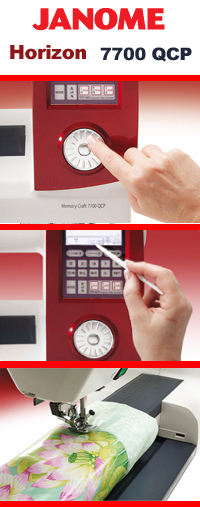

Сравнение швейных машин Bernina Aurora 1405 (450) и Janome Memory Craft Horizon 7700 QCP
(Рассматриваются компьютеризированные швейные машины)Bernina Aurora 1405

|
Bernina, уже приучившая к своим европейским квадратичным формам, и в этот раз не отошла от своих принципов. Стоит отметить, что своими изгибами все машины марки Aurora довольно схожи. К приятным плюсам, которые видны на первый, даже мимолетный взгляд, можно смело отнести элегантный приставной столик и интересный шкафчик-«гардероб» для хранения аксессуаров. А уж если включить машинку, обладающую вертикальным ротационным челноком (двойного обегания), то все особенности невозможно и перечислить. Для того, чтобы удивить потребителя своими эргономическими способностями, инженеры Bernina наделили Bernina Aurora 1405 (405) такими функциями как закрепление строчки, зеркальное отображение рисунка, регулятор скорости, кнопка «старт-стоп» и коленоподъемник. Удобная педаль, в свою очередь, позволит одним нажатием позиционировать иглу в вертикальной плоскости. Невозможно пройти мимо интересных качеств швейной машинки Bernina Aurora 1405 (405). У неё присутствует возможность подключения вышивального блока и лапки BSR, обе функции достойны отдельного рассмотрения, так же полезна возможность намотки шпули без отрыва от шитья. Впечатляюще огромные возможности самой машинки плюс Ваши безграничные идеи и фантазии – это и есть залог Вашего совершенства в швейной индустрии! Это Вам позволит воплотить в жизнь 160 швейных программ (в частности 9 петель и 1 алфавит). При использовании вышивального блока и подсоединению его к ПК, Вы без труда сможете выполнять вышивки любой сложности. Лапка BSR, запатентованный эксклюзив фирмы Bernina, снимает все ограничения при свободной стёжке. Благодаря этому замечательному аксессуару Вы можете стегать с шагом в 2 мм в любом направлении и при любой скорости. Нет предела для вашей фантазии! Можно упомянуть еще о нескольких отличительных особенностей Bernina 1405. Лапки этой машины сделаны на длинной ножке, что позволяет снять люфт при прижатии материала. Так же данная швейная машина умеет распознавать, какая именно лапка стоит в данный момент, с помощью отражения вмонтированных в ножку лапки диоптрий, что значительно поможет заниматься шитьем, не отвлекаясь на аксессуары швейного оборудования. |
Janome Memory Craft Horizon 7700 QCP
|  |
А теперь переходим к Janome Memory Craft Horizon 7 700 QCP. Огромная поверхность шитья с великолепной подсветкой, сенсорный экран, русифицированное меню, впечатляющий дизайн... Все это внушительно мощный и удивительно элегантный Horizon от фирмы Janome. После впечатления, оставшегося от тестирования Bernina, казалось уже не найдется достойный конкурент! Но вот у Horizon есть свои козыри. Во-первых, LCD экран высокого разрешения, да еще с сенсорными кнопками, сразу настраивает на позитивное отношение к машине. Во-вторых, легкое управление «одним регулятором» укрепляет авторитет машины в глазах потребителя. А в-третьих, все остальное, что скрыто чуть дальше первого впечатления. На это остановимся более подробно. Сверхудачное сочетание совершенства управления и инновационных технологий, позволяет нам узнать несколько новых терминов. 7700 обладает автоматическим конвертором пластины (АРС), который изменяет размер и форму отверстия иглы, Системой подачи (SFS+) ( одновременное движение материалов, протягивание материала троекратно) и системой AcuFeed (протягивание множества слоев материала). Все это позволяет легко выполнять ручную стежку, а 250 швейных операций дает возможность комфортного шитья как самых используемых строчек, так и небольших пиктограмм и алфавитов. Дополнит удовольствие во время шитья и встроенный верхний транспортер, ставший уже хитом у наших рукодельниц. Он позволит без хлопот работать с легкими тканями. А автоматическое натяжение нити и огромное количество лапок делает Вас не просто швеей, а руководителем процесса. |
После удачного знакомства очень интересно попробовать эти аппараты в деле. Для этого, традиционно проведем несколько тестов:
Тест № 1: «Выметывание петли с глазком»
|
Что ж, залезаем в шкафчик Бернины и пенал Джаноме, с целью взять петельные лапки. Устанавливаем лапки и начинаем обрабатывать петлю... У 1405 все происходит не сразу, сначала надо установить размер петли в ручную, а уже потом делать петли этих же размеров (если их необходимо выполнить на изделии несколько). Петля получается усиленная, с проложением прямых строчек как с левой, так и с правой стороны, идеальная по своей геометрии. В то же время 7700 сама определяет размер, об этом даже думать не надо, достаточно просто выбрать нужного диаметра пуговицу и правильно расположить ее на лапке, после чего нажать на педаль или на кнопку «старт». Петля тоже красива по геометрии, но не имеет прямой строчки в своей левой части. Вывод: Тут стоит просто поставить равенство или выбрать то, что Вам ближе: идеальная сверхпрочная петля с небольшими временными затратами, либо идеальная и просто прочная петля, с практически полным отсутствием временных затрат. |
Тест № 2: «Быстроходность»
| Тут все просто, выбираем прямую строчку (длина стежка 2.5 мм) и начинаем шить, без специальных подсчетов вооружившись внимательными глазами. Bernina была более подготовлена к нашему тридцати сантиметровому пробегу, и как итог пришла к финишу, концу своего лоскутка ткани, первой, не очень значительно обойдя своего преследователя. |
Тест № 3: «Шитье без остановки»
|
Оставляем точно такую же прямую строчку, включаем машинки на шитье, засекаем время и наблюдаем за всеми изменениями происходящими в пределах нашей видимости и осязаемости, таких как нагрев, стук и иные отклонения. Не стоит даже долго описывать все происходящее, по причине практически нулевых отклонений в работе обоих агрегатов. Единственное, что заслуживает внимания, так это не большой нагрев обеих машин в районе двигателя, и нагрелся в незначительной степени больше Horizon. |
Вывод:
Сегодня мы сравнивали достойные аппараты, но все же есть нюансы, на которые стоит посмотреть при выборе. Бернина, собранная в Швейцарии, предназначена для профи, имеющих опыт работы с промышленными машинами, либо с машинами этого же уровня. Она требует весьма щепетильного подбора натяжения, но в итоге дает большие возможности нежели Джаноме. В то время как агрегат от Janome более прост для домашнего использования, имеет автомат натяжения и не требует особого ухода, в виде смазки. Ну и как итог, с обеими машинами вы попадете в точку, а выбор между статью и классикой Старого света, либо Азиатской сверхудобностью остается за вами.
В данной статье мы провели сравнение швейных машинок и Bernina Aurora 1405 (405) и Janome Memory Craft Horizon 7 700 QCP. Получить информацию о сравнении других швейных машин вы можете на странице «обзоры». Сайт регулярно обновляется и дополняется новыми обзорами, не пропустите!